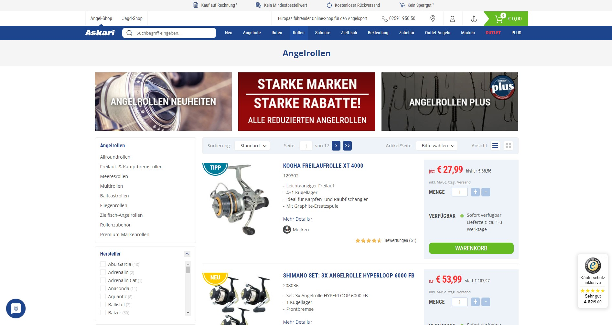
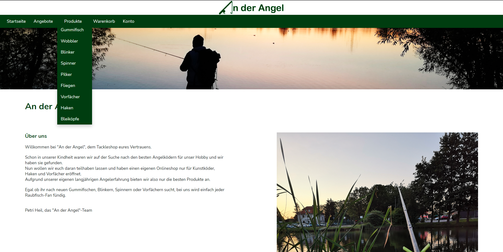

Dokumentation
Projekt von Marlene Bauch, Johannes Otto, Michel Rost
Zurück zur Startseite
Inhaltsverzeichnis
Inhalt Recherche Zielbestimmungen und Kriterien Seitenlayout Navigationsstruktur Design Funktionalitäten Projektstruktur Datenbank Rollenmodell Flussbild für Dateneingabe Herausforderungen Besonderheiten Projektmanagement-DokumentationEinleitung
Für die Module Grundlagen Webprogrammierung und Dynamische Webprogrammierung soll in Gruppen eine Website mit Shop-System erstellt werden.
Neben der passenden optischen Anmutung und guten Bedienbarkeit ist die zentrale Funktionalität der Shop: also die Verwaltung, Präsentation, Auswahl und der "Kauf" von Artikeln.
Ausgangssituation
Die Firma An der Angel existiert noch nicht allzu lange. Sie wurde von einer Gruppe leidenschaftlicher Angler gegründet, die bereits seit Jahren auf der Suche nach den besten Ködern für einen erfolgreichen Angelausflug sind.
Deshalb haben sie es sich zum Ziel gemacht, hochwertige Angelköder und Zubehör zu verkaufen. Dafür benötigt die Firma einen geeigneten Online-Shop, der die Kunden nicht nur anlockt, sondern sie auch auf der Seite hält.
Die Kunden sind interessiert an einer übersichtlichen und schlichten Website, wo der Fokus auf den Produkten liegt. Im Winter werden sie wohl etwas mehr Zeit beim Einkauf von Ködern verbringen als im Sommer.
Der Bestellvorgang sollte deshalb aus wenigen Schritten bestehen ohne ständige Überprüfung der Kontaktdaten.
Recherche
www.lieblingskoeder-fanshop.de
- Farbflächen erstrecken sich nicht über die gesamte Breite
- übersichtliche Navigation mit Untermenüpunkten
- Erster Blick zum Bild, also Fokus auf der Farbe der Gummifische, obwohl nach Größen sortiert
www.angelsport.de
- Navigationsleiste oben
- Auf der linken Seite weitere Untermenüs und Filter
- sehr detaillierte Auswahlmöglichkeiten, unübersichtlich
- Grünton zu grell
- Inhalt der Seite ist zentriert
- Wirkt nicht sehr modern
www.zeck-fishing.com
- Startseite mit aktuellen Themen
- Modern und übersichtlich
- Kategorien verbildlicht durch Piktogramme statt Produktfotos
- Übersichtliches Filtermenü
- Schlichtes Design in Grautönen mit zwei Akzentfarben, Fokus liegt auf den Produkten
Zielbestimmungen
Kunden sollen sich Produkte ansehen und diese nach bestimmten Kriterien filtern können. Der Online-Shop soll es eingeloggten Kunden ermöglichen, Produkte in einen Warenkorb zu legen und zu kaufen.
Da ein Kundenkonto Voraussetzung für eine Bestellung ist, kann auf eine Überprüfung der Adresse vor Kaufabschluss verzichtet werden.
Muss-Kriterien
- Responsive Webdesign
- Registration / Kundenkonto erstellen
- Registrierte Kunden sollen sich einloggen können
- Datenänderung im Kundenkonto, Kundenkonto löschen
- Übersicht aller Produkte
- Übersicht aller Produkte einer Kategorie
- Übersicht aller Produkte, die im Preis reduziert sind
- Filterung der Produkte nach Kategorie, Preis und Hersteller
- Produkte in den Warenkorb legen
- Produkte im Warenkorb bestellen/kaufen
Wunsch-Kriterien
- Produktanzahl im Warenkorb ändern, Produkte auch entfernbar
- Suchfunktion
- Kontaktformular
Abgrenzungskriterien
- Stilangabe für Druckausgabe
- Einpflegen neuer Produkte über die Website
Seitenlayout
Startseite

Login
Konto
Produkte
Warenkorb
Navigationsstruktur
- Startseite
- Angebote
-
Produkte
- Gummifisch
- Wobbler
- Blinker
- Spinner
- Pilker
- Fliegen
- Vorfächer
- Haken
- Bleiköpfe
-
Warenkorb
- Kasse
-
Konto
- Login
- Konto erstellen
-
Kundenkonto
- Profildaten ändern
- Adresse ändern
- Account löschen
-
Impressum
- Dokumentation
- Datenschutz
Wenn man auf ein einzelnes Produkt klickt, kommt man auf die Seite mit den Produktdetails.
Design
-
Layout
- Die Navigationsleiste in der mobilen Variante erstreckt sich über die gesamte Breite, um eine Grenze zwischen dem Logo und dem Seiteninhalt zu ziehen, so wie in der Desktop-Variante.
- Auf der Startseite befinden sich keine Produkte, weil diese der Firmen-Vorstellung dienen soll. Dank der Navigationsleiste gelangt man schnell zu den angebotenen Produkten.
- Die Filter befinden sich in der Desktop-Variante auf der linken Seite, da es auf vielen Internetseiten so ist und dementsprechend sind wir daran gewöhnt und suchen intuitiv auf der linken Seite danach.
- Die Filter befinden sich in der mobilen Variante unterhalb der Überschrift (z.B. Produkte oder Gummifisch), damit erkennbar ist, dass das ausklappbare Menü sich auf die Produkte unterhalb bezieht.
- Der Seiteninhalt auf der Produktdetail-Seite erstreckt sich in der Desktop-Variante nicht über die gesamte Breite, da die Informationen kurz sind. Die Informationen sind untereinander, um die Übersichtlichkeit zu erhalten.
- Die Varianten für mobile Geräte und Desktop sind sich sehr ähnlich, damit man sich in beiden Versionen schnell zurecht findet.
-
Farben
- Wir haben und für den dunklen Grünton entschieden, da viele Zubehörartikel zum Angeln in grün und Tarnfarben gehalten sind. Außerdem passt die Farbe sehr gut zur Natur.
- Die Grauabstufungen helfen bei der Trennung verschiedener Bereiche und wirken seriöser als helle Grüntöne.
- Der Rotton bei Angeboten hebt die Preissenkung hervor.
-
Schriften
- Die Schriftart Nonito passt sehr gut zu den abgerundeten Buchstaben des Logos und ist trotzdem einfach zu lesen.
Funktionalitäten
Startseite
- Keine Funktionalitäten auf der Startseite
-
Navigationsleiste
- Leitet mit einem Klick auf die entsprechenden Wörter auf die zugehörige Seite weiter
- Ausklappmenü in der Navigationsleiste bei dem Punkt "Produkte"
Produktübersicht (Angebote, Produkte, Produkte nach Kategorie)
-
Filter auf der linken Seite
- Filterung der Produkte nach Preis, Kategorie und Hersteller
- Beim Setzen einer Preisbeschränkung kann man Minimum (Maximum automatisch maximaler Preis aus der Datenbank), Maximum (Minimum automatisch 0) oder beides angeben; Kommazahlen müssen mit einem Punkt statt Komma geschrieben werden
- Bei der Auswahl der Kategorie kann man eine oder mehrere Kategorien anklicken
- Ist man über die Navigationsleiste bereits auf einer Kategorieseite, steht die Wahl der Kategorie nicht zur Verfügung
- Bei der Auswahl der Hersteller kann man einen oder mehrere Hersteller anklicken
- Um die Filterung auszuführen, muss man auf den Button "Filter anwenden" klicken
- Filter sind innerhalb eines Filterkriteriums oder-verknüpft und die Kriterien sind untereinander und-verknüpft
- Klickt man auf ein Produkt (Bild, Name, Preis), gelangt man auf die Produktdetailseite des Produktes
Produktdetails
- Anzahl der Produkteinheiten, die man bestellen möchte, auswählbar
- Über den Button "Zum Warenkorb hinzufügen" kann man das Produkt in der gewünschten Anzahl dem Warenkorb hinzufügen, bei mehrmaligem Betätigen des Button wird die Anzahl im Warenkorb erhöht, man bleibt auf der aktuellen Seite
Warenkorb
- Der Warenkorb wird in der Session gespeichert
- Über einen Klick auf das Bild oder den Produktnamen gelangt man auf die entsprechende Produktdetailseite
- Anzahl der Produkteinheiten, die man bestellen möchte, änderbar; wenn man die Anzahl auf 0 setzt, wird das Produkt aus dem Warenkorb entfernt
- Über den Button "Warenkorb aktualisieren" kann man die geänderte Produktanzahl aktualisieren, die Preise werden dabei auch angepasst (auch die Angebotspreise werden berücksichtigt)
- Über den Button "Zur Kasse" wird man auf die Kassenseite weitergeleitet
Kasse
- Über einen Klick auf das Bild oder den Produktnamen gelangt man auf die entsprechende Produktdetailseite
- Die Zahlungsart muss ausgewält werden, um die Bestellung abzuschließen
-
Über den Button "Jetzt kaufen!" wird der Bestellungsprozess abgeschlossen
- In den Datenbanktabellen "order" und "orderitems" werden die Daten eingetragen
- Die Bestelldaten in der Session werden gelöscht
- Man wird automatisch zur Startseite weitergeleitet
- Ist man noch nicht eingeloggt, wird man auf die Login-Seite weitergeleitet, hat man sich dann angemeldet, wird man wieder auf die Kassenseite weitergeleitet
Login
- Hier müssen die Email-Adresse und das Passwort eingegeben und mit dem Button "Login" abgesendet werden
- Die eingegebenen Daten werden mit denen in der Datenbanktabelle "account" verglichen
- Existieren die Anmeldedaten, wird man eingeloggt
- Ist der Haken bei "Eingeloggt bleiben" gesetzt, wird ein Cookie für 30 Tage gesetzt
- Existieren die Anmeldedaten nicht, gibt es eine Fehlermeldung und die Daten müssen erneut eingegeben werden
- Hat man noch kein Konto, gelangt man über "Konto erstellen" zu der entsprechenden Seite
Konto erstellen
- Hier müssen Daten zur Kontoerstellung eingegeben werden
- Das Passwort muss mindestens acht Zeichen lang sein, sonst gibt es eine Fehlermeldung
- Alle Felder müssen ausgefüllt sein
- Über den Button "Erstellen" werden die Daten abgesendet
- Wenn die Email-Adresse in der Datenbank existiert, kann kein Konto erstellt werden und es gibt eine Fehlermeldung
- Existiert die Email-Adresse noch nicht werden die entsprechenden Daten in die Datenbanktabelle "account" eingetragen
- Existiert die Adresse bereits, wird die entprechende ID in "account" eingetragen, ansonsten wird die Adresse in "address" eingetragen und die ID in "account"
- Wurde erfolgreich ein Konto erstellt, wird man automatisch zur Login-Seite weitergeleitet und muss sich einloggen
- Über "zurück zum Login" kommt man wieder zur Login-Seite
Konto
- Hier werden die Kontodaten angezeigt
- Über "Logout" werden Session und Cookies mit User-Daten gelöscht und man wird auf die Login-Seite weitergeleitet
- Über den Button "Profildaten ändern" wird man auf die Seite "Profil aktualisieren" weitergeleitet
- Über den Button "Adresse ändern" wird man auf die entsprechende Seite weitergeleitet
- Über den Button "Account löschen" werden Session und Cookies und der entsprechende Eintrag in der Datenbanktabelle "account" gelöscht und man wird auf die Login-Seite weitergeleitet
- Möglichkeit zur Änderung einzelner oder aller Accountdaten und entsprechende Änderung in der Datenbanktabelle "account" über den Button "Aktualisieren"
- Über "zurück zum Konto" kommt man wieder zur Kontoseite
- Möglichkeit zur Änderung der Adresse, alle Felder müssen ausgefüllt sein
- Über den Button "Aktualisieren" wird ein neuer Eintrag in der Datenbanktabelle "address" erstellt (falls Adresse noch nicht existiert) und die ID in "account" wird geändert
- Über "zurück zum Konto" kommt man wieder zur Kontoseite
Impressum und Datenschutz
- Über "Dokumentation" gelangt man zur Dokumentation
- Diese Seite enthält keine Funktionalitäten
Projektstruktur
- MVC
- Ordner "assets" (Schriftarten, Bilder, CSS, JavaScript)
- Ordner "config" (Datenbankenanbindung, Pfade definiert)
- Ordner "controllers" (Seitenaufruf)
- Ordner "core" (Basiscontroller, Funktionen, Basistabelle für Datenbank)
- Ordner "documentation" (Dokumentation)
- Ordner "models" (Datenschemata für die Datenbanktabellen)
- Ordner "src" (Skript zur Erstellung der Datenbank und deren Testdaten)
- Ordner "views" (Seiten der Website)
Datenbank
Rollenmodell
Das Rollenmodell kommt zum Einsatz, wenn verschiedene Arten von Konten unterschiedliche Funktionen haben.
Da es auf unserer Seite nur eine Art von Kundenkonto gibt, kommt ein Rollenmodell nicht zum Einsatz.
Flussbild für Dateneingabe
Bestellvorgang
Herausforderungen
-
Umgang mit MVC
- Projekt ohne MVC zu zeitintensiv und Codewiederholungen
- Umstieg auf MVC
- Einarbeitung in MVC
- Übersichtlicher Code-Style
-
Psychische Belastung
- Pausen
- Rückendeckung der Gruppe
-
Flüchtigkeitsfehler
- Routine beim Programmieren (PHP) und Schreiben (HTML und CSS)
-
JavaScript
- Lösung: offen
-
CSS
- Einbinden der Datei mit Import nicht vergessen!
- Responsive Webdesign - mittels Media Queries
Besonderheiten
Unvollständige Implementierungen
-
JavaScript
- Formularvalidierung mit AJAX
- Dynamisches Nachladen von Datenbankinhalten
Projektmanagement-Dokumentation
Marlene Bauch, Johannes Otto, Michel Rost
- Ideensammlung, Auswahl der Funktionalitäten, Layoutentwürfe - recht zeitintensiv
- Präsentationen - nicht sehr zeitintensiv
- Datenbank erstellt - zeitintensiv, weil ständige Verbesserung der Datenbank
- Datenbankanbindung - zeitintensiv wegen eines kleinen Fehlers
- Ordnerstruktur mittels MVC - nicht aufwendig dank dem Vorbild Notenspiegel aus der Vorlesung
- Navigationsleisten oben und unten inkl. Styling - aufwendig, da erste Versuche mit CSS
- Produktseite mit Laden der Daten aus der Datenbank - dank der Hilfe von Herrn Friess für den Projektanfang (noch geringe PHP-Kenntnisse) nicht so zeitintensiv
- Dokumentation - sehr zeitintensiv
Johannes Otto, Michel Rost
- Login und Signup, Cookies und Session - sehr aufwendig, weil PHP noch nicht so gut verstanden
- Kontoseite - geringer Zeitaufwand für den Umfang an Funktion
Marlene Bauch
- Styling, Responsive Design - Mobiloptimierung der Navigationsleiste eher zeitintensiv
- Vereinheitlichung der <div class=""> - aufwendig, weil man nichts übersehen darf
- Anpassung der PHP-Dateien an das Styling - nicht sehr aufwendig
- Filter auf der Angebotsseite hinzugefügt - sehr schnell erledigt
- Anpassung der Berechnung des Angebotpreises in den entsprechenden Dateien - sehr schnell erledigt
- Startseite, Impressum, Datenschutz - einfach und schnell dank Generatoren für Impressum und Datenschutz
Johannes Otto
- Filter - aufwendig
- Warenkorb und Checkout - aufwendig, aber PHP schon besser verstanden
- JavaScript - zeitintensiv wegen mangelnder Kenntnisse von JavaScript
Michel Rost
- Testdaten erstellt, Text für Startseite geschrieben - sehr zeitintensiv
- Angebotsseite - nicht sehr aufwendig dank vorhandener Produkteseite